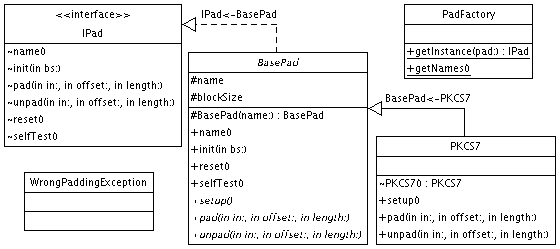

|
For the latest news and information visit The GNU Crypto project |
||||||||||
| PREV PACKAGE NEXT PACKAGE | FRAMES NO FRAMES | ||||||||||
See:
Description
| Interface Summary | |
| IPad | The basic visible methods of any padding algorithm. |
| Class Summary | |
| BasePad | An abstract class to facilitate implementing padding algorithms. |
| PadFactory | A Factory to instantiate padding schemes. |
| PKCS7 | The implementation of the PKCS7 padding algorithm. |
| TBC | The implementation of the Trailing Bit Complement (TBC) padding algorithm. |
| Exception Summary | |
| WrongPaddingException | A checked exception that indicates that a padding algorithm did not find the expected padding bytes when unpadding some data. |
Provides a basic API for using block cipher padding algorithms.
A padding scheme is merely a standard method of ensuring that the input to be encrypted is a multiple of the cipher's block size.
The following diagram shows the important classes participating in this package:

The following example pads an input buffer, transforms the padded buffer
with already-initialized IMode instances, then unpads the
output buffer.
IPad padding = IPad.getInstance("PKCS7");
padding.init(blockSize);
byte[] pad = padding.pad(input, 0, input.length);
byte[] pt = new byte[input.length + pad.length];
byte[] ct = new byte[pt.length];
byte[] cpt = new byte[pt.length];
System.arraycopy(input, 0, pt, 0, input.length);
System.arraycopy(pad, 0, pt, input.length, pad.length);
for (int i = 0; i + blockSize < pt.length; i += blockSize)
{
enc.update(pt, i, ct, i);
}
for (int i = 0; i + blockSize < ct.length; i += blockSize)
{
dec.update(ct, i, cpt, i);
}
int unpad = padding.unpad(cpt, 0, cpt.length);
byte[] output = new byte[cpt.length - unpad];
System.arraycopy(cpt, 0, output, 0, output.length);
|
For the latest news and information visit The GNU Crypto project |
||||||||||
| PREV PACKAGE NEXT PACKAGE | FRAMES NO FRAMES | ||||||||||